Diagrams¶
Diagram and domain-specific visualization classes. All inherit from
VCollection and support the full set of animation methods.
ChessBoard¶
- class ChessBoard(fen='rnbqkbnr/pppppppp/8/8/8/8/PPPPPPPP/RNBQKBNR', cx=960, cy=540, size=600, show_coordinates=True, light_color='#f0d9b5', dark_color='#b58863', creation=0, z=0)¶
Chess board visualization with pieces from a FEN string. The board is drawn as an 8x8 grid of alternating light and dark squares, with pieces rendered as Unicode chess symbols. White pieces are displayed in white (
#fff), black pieces in dark grey (#222).- Parameters:
fen (str) – Piece placement in FEN notation (rows separated by
/). Only the piece-placement portion of FEN is used. Digits represent empty squares. Default is the standard starting position.cx (float) – Center x-coordinate of the board.
cy (float) – Center y-coordinate of the board.
size (float) – Board side length in pixels. Each cell is
size / 8pixels.show_coordinates (bool) – Show file (a–h) and rank (1–8) labels around the board edges.
light_color (str) – Fill color for light squares.
dark_color (str) – Fill color for dark squares.
creation (float) – Creation time.
z (float) – Z-index for layering.
- move_piece(from_sq, to_sq, start=0, end=1, easing=smooth)¶
Animate moving a piece from one square to another using algebraic notation (e.g.
'e2'to'e4'). The piece is shifted in pixel space based on the difference in file and rank. The internal piece mapping is updated so subsequent moves reference the new square.- Parameters:
from_sq (str) – Source square in algebraic notation (e.g.
'e2').to_sq (str) – Target square in algebraic notation (e.g.
'e4').start (float) – Animation start time.
end (float) – Animation end time.
easing – Easing function.
Example: ChessBoard
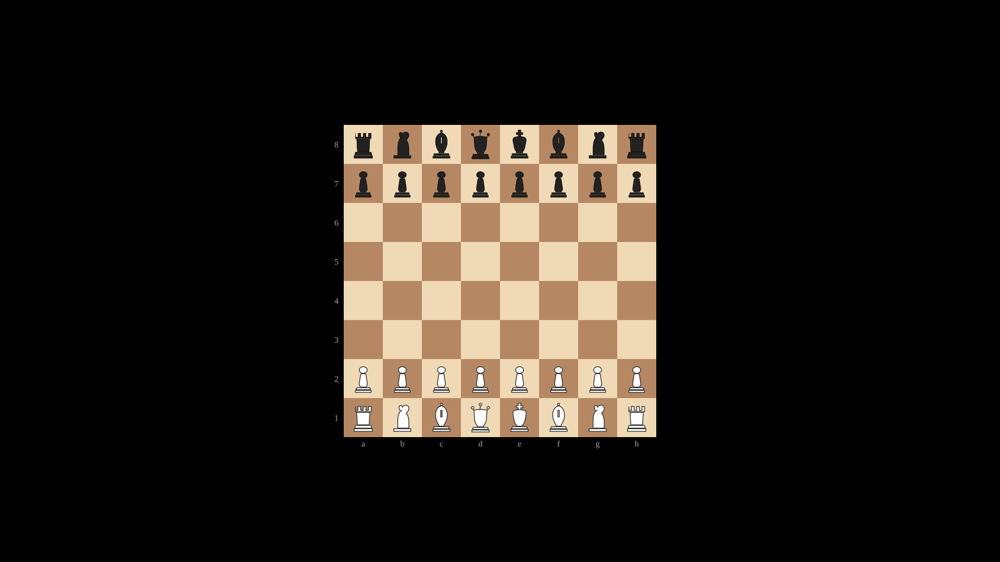
"""ChessBoard with default starting position."""
from vectormation.objects import *
v = VectorMathAnim()
v.set_background()
board = ChessBoard(size=600)
v.add(board)
v.show(end=0)
PeriodicTable¶
Example: PeriodicTable
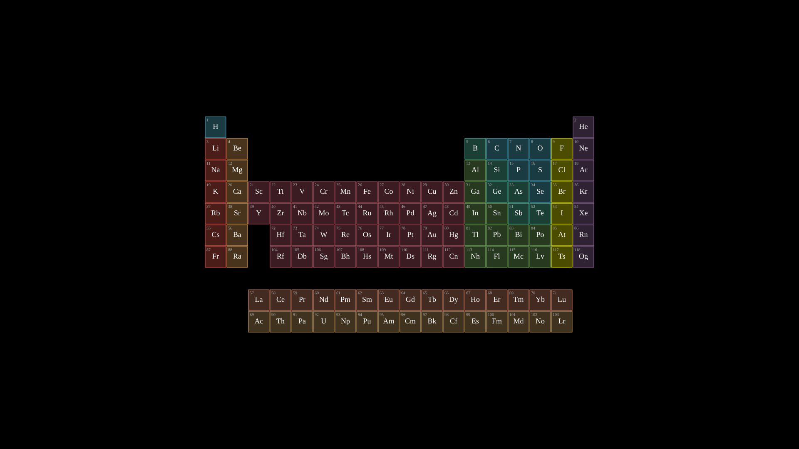
"""PeriodicTable display."""
from vectormation.objects import *
v = VectorMathAnim()
v.set_background()
table = PeriodicTable(cell_size=52)
v.add(table)
v.show(end=0)
- class PeriodicTable(cx=960, cy=540, cell_size=48, creation=0, z=0)¶
Periodic table of all 118 elements with color-coded categories. Each element cell shows its atomic number and chemical symbol. Lanthanides and actinides are shown in separate rows below the main table. Categories and their colors:
Category
Color
Nonmetal
#58C4DDNoble gas
#9A72ACAlkali metal
#FC6255Alkaline earth metal
#F0AC5FMetalloid
#5CD0B3Halogen
#FFFF00Transition metal
#C55F73Post-transition
#83C167- Parameters:
cx (float) – Center x-coordinate of the table.
cy (float) – Center y-coordinate of the table.
cell_size (float) – Size of each element cell in pixels.
creation (float) – Creation time.
z (float) – Z-index for layering.
- highlight(symbol, start=0, end=1, color='#FFFF00', easing=there_and_back)¶
Highlight an element by its chemical symbol. The cell background is indicated (scale pulse) and the symbol text flashes in the given color.
- Parameters:
symbol (str) – Chemical symbol (e.g.
'Fe','O','He').start (float) – Animation start time.
end (float) – Animation end time.
color (str) – Flash color for the symbol text.
easing – Easing function.
Example: highlighting elements
table = PeriodicTable() table.highlight('Fe', start=0, end=1.5) table.highlight('O', start=1, end=2.5)
BohrAtom¶
Example: Carbon Atom (BohrAtom)
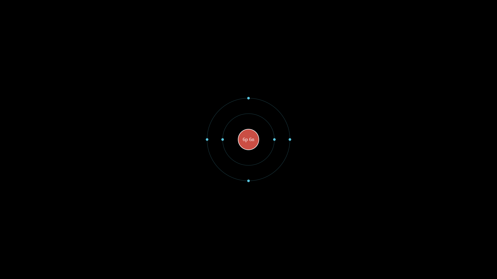
"""BohrAtom: Carbon atom with electron configuration."""
from vectormation.objects import *
v = VectorMathAnim()
v.set_background()
carbon = BohrAtom(protons=6, neutrons=6, nucleus_r=40, shell_spacing=60)
v.add(carbon)
v.show(end=0)
- class BohrAtom(protons=1, neutrons=0, electrons=None, cx=960, cy=540, nucleus_r=30, shell_spacing=40, creation=0, z=0)¶
Bohr model of an atom with a nucleus and concentric electron shells. The nucleus shows the proton (and neutron) count. Electron shells are drawn as circles with evenly spaced electron dots. If electrons is
None, shells are auto-filled using the sequence 2, 8, 8, 18, 18, 32.- Parameters:
protons (int) – Number of protons (shown in the nucleus label).
neutrons (int) – Number of neutrons. When
0, the nucleus label shows only protons (e.g.6p+); otherwise both are shown (e.g.6p 6n).electrons (list) – List of electron counts per shell (e.g.
[2, 4]for carbon), orNonefor automatic filling based on the proton count.cx (float) – Center x-coordinate.
cy (float) – Center y-coordinate.
nucleus_r (float) – Radius of the nucleus circle in pixels.
shell_spacing (float) – Spacing between concentric orbit rings in pixels.
creation (float) – Creation time.
z (float) – Z-index for layering.
- orbit(start=0, end=None, speed=45)¶
Animate all electrons orbiting the nucleus. Each electron dot rotates continuously around the center using
always_rotate.- Parameters:
start (float) – Animation start time.
end (float) – Animation end time (
Nonefor indefinite).speed (float) – Rotation speed in degrees per second.
Example: carbon atom
# Carbon atom with 6 protons, 6 neutrons carbon = BohrAtom(protons=6, neutrons=6) carbon.orbit(start=0, end=5)
Example: custom electron configuration
# Sodium with explicit shell configuration sodium = BohrAtom(protons=11, neutrons=12, electrons=[2, 8, 1]) sodium.orbit(start=0, end=8, speed=60)
Automaton¶
- class Automaton(states, transitions, accept_states=None, initial_state=None, cx=960, cy=540, radius=300, state_r=35, font_size=20, creation=0, z=0)¶
Finite state machine / automaton visualization. States are arranged in a circle and drawn as labeled circles. Transitions are drawn as arrows between states; self-loops are rendered as arcs above the state. Accept states are shown with a double circle (inner ring). The initial state receives an entry arrow from the left.
- Parameters:
states (list) – List of state name strings (e.g.
['q0', 'q1', 'q2']).transitions (list) – List of
(from_state, to_state, label)tuples. Each tuple describes a labeled directed edge in the automaton.accept_states (set) – Set of state names drawn with a double circle to indicate acceptance.
initial_state (str) – Name of the starting state. An entry arrow is drawn pointing into this state.
cx (float) – Center x-coordinate of the state circle layout.
cy (float) – Center y-coordinate of the state circle layout.
radius (float) – Radius of the circular layout (distance from center to states).
state_r (float) – Radius of each state circle.
font_size (float) – Font size for state labels and transition labels.
creation (float) – Creation time.
z (float) – Z-index for layering.
- highlight_state(state_name, start=0, end=1, color='#FFFF00', easing=there_and_back)¶
Flash-highlight a state by name.
- Parameters:
state_name (str) – Name of the state to highlight.
start (float) – Animation start time.
end (float) – Animation end time.
color (str) – Flash color.
easing – Easing function.
- highlight_transition(from_state, to_state, start=0, end=1, color='#FFFF00')¶
Highlight the arrow (or arc for self-loops) between two states by flashing its color. For normal arrows, both the shaft and tip are flashed. For self-loop arcs, the stroke color is flashed.
- Parameters:
from_state (str) – Source state name.
to_state (str) – Target state name.
start (float) – Animation start time.
end (float) – Animation end time.
color (str) – Flash color.
- simulate_input(word, start=0, delay=0.5, color='#FFFF00', transitions=None)¶
Animate stepping through the automaton one character at a time. For each character in word, the method highlights the current state, then the transition arrow, then the next state. If no transition exists for a character, the current state flashes red (rejected). At the end, the final state is highlighted green if it is an accept state, or red otherwise.
- Parameters:
word (str) – Input string to process character by character.
start (float) – Animation start time.
delay (float) – Duration of each highlight step in seconds.
color (str) – Highlight color during traversal.
transitions (list) – Optional override for the transition list. Defaults to the transitions passed at construction.
Example: Automaton
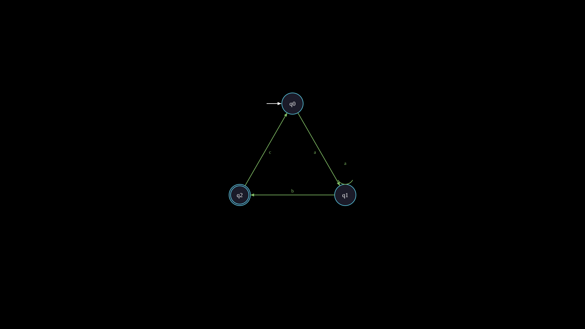
"""Automaton (finite state machine)."""
from vectormation.objects import *
v = VectorMathAnim()
v.set_background()
fsm = Automaton(
states=['q0', 'q1', 'q2'],
transitions=[
('q0', 'q1', 'a'),
('q1', 'q2', 'b'),
('q2', 'q0', 'c'),
('q1', 'q1', 'a'),
],
accept_states={'q2'},
initial_state='q0',
radius=200,
)
v.add(fsm)
v.show(end=0)
NetworkGraph¶
- class NetworkGraph(nodes, edges=None, cx=960, cy=540, radius=300, node_r=30, font_size=20, layout='circular', directed=False, creation=0, z=0)
Network/graph visualization with labeled nodes and edges. Supports three layout algorithms and both directed (arrow) and undirected (line) edge rendering. Edge labels are displayed at the midpoint of each edge.
- Parameters:
nodes – A list of labels (indexed 0, 1, …) or a
{id: label}dictionary. When a list is provided, each element’s index becomes its ID.edges (list) – List of
(from_id, to_id)or(from_id, to_id, label)tuples. Edge labels are optional.cx (float) – Center x-coordinate of the layout.
cy (float) – Center y-coordinate of the layout.
radius (float) – Layout radius for circular layout, or half-extent for grid and spring layouts.
node_r (float) – Radius of each node circle.
font_size (float) – Font size for node and edge labels.
layout (str) –
Layout algorithm:
'circular'– nodes evenly spaced on a circle (default).'grid'– nodes arranged in a square grid.'spring'– force-directed layout (50 iterations of repulsion and edge attraction with a fixed random seed of 42).
directed (bool) – Draw edges as arrows when
True, as plain lines whenFalse.creation (float) – Creation time.
z (float) – Z-index for layering.
- highlight_node(node_id, start=0, end=1, color='#FFFF00', easing=there_and_back)
Flash-highlight a node by its ID.
- Parameters:
node_id – The node identifier (integer index or dict key).
start (float) – Animation start time.
end (float) – Animation end time.
color (str) – Flash color.
easing – Easing function.
- get_node_position(node_id)¶
Return the
(x, y)pixel position of a node. ReturnsORIGINif the node ID is not found.- Parameters:
node_id – The node identifier.
- Return type:
tuple[float, float]
Example: NetworkGraph
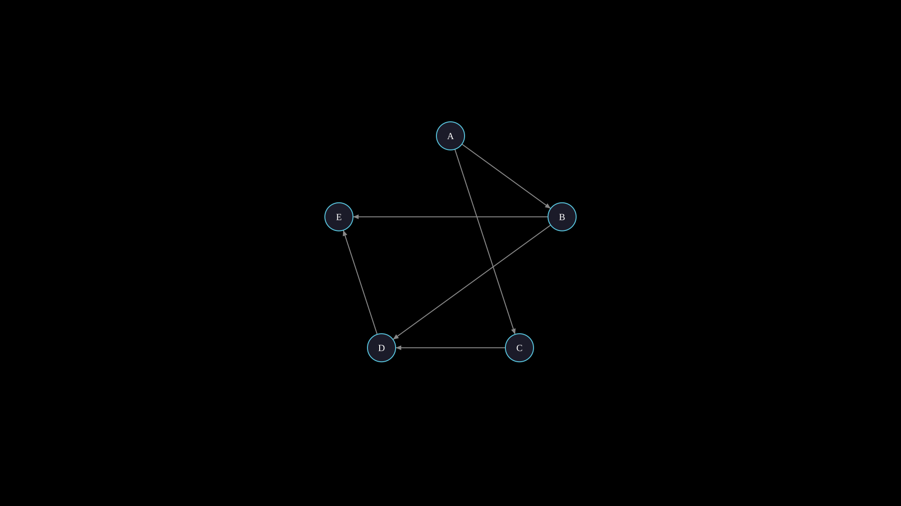
"""NetworkGraph with nodes and edges."""
from vectormation.objects import *
v = VectorMathAnim()
v.set_background()
graph = NetworkGraph(
nodes={0: 'A', 1: 'B', 2: 'C', 3: 'D', 4: 'E'},
edges=[(0, 1), (0, 2), (1, 3), (2, 3), (3, 4), (1, 4)],
radius=250,
directed=True,
)
v.add(graph)
v.show(end=0)
Tree¶
- class Tree(data, cx=960, cy=100, h_spacing=120, v_spacing=100, node_r=20, font_size=18, layout='down', creation=0, z=0)¶
Hierarchical tree layout visualization. Nodes are drawn as labeled circles connected by straight-line edges. The tree is automatically laid out using a width-accumulating algorithm that avoids overlapping subtrees.
- Parameters:
data –
Tree structure in one of two formats:
Tuple format:
(label, [child_tuples, ...])where each child is itself a(label, children)tuple. Leaf nodes use an empty list:('leaf', []).Dictionary format: A nested dict
{key: {child_key: ...}}. Converted internally to tuple format.
cx (float) – X-coordinate for the root node.
cy (float) – Y-coordinate for the root node.
h_spacing (float) – Minimum horizontal spacing between siblings in pixels.
v_spacing (float) – Vertical spacing between levels in pixels.
node_r (float) – Radius of each node circle.
font_size (float) – Font size for node labels.
layout (str) –
'down'places the root at the top with children below;'right'places the root at the left with children to the right.creation (float) – Creation time.
z (float) – Z-index for layering.
- get_node_position(label)¶
Return the
(x, y)pixel position of a node by its label. If there are duplicate labels, returns the position of the first occurrence. ReturnsORIGINif the label is not found.- Parameters:
label (str) – Node label.
- Return type:
tuple[float, float]
- highlight_node(label, start=0, end=1, color='#FFFF00', easing=there_and_back)¶
Flash-highlight a node by label.
- Parameters:
label (str) – Node label to highlight.
start (float) – Animation start time.
end (float) – Animation end time.
color (str) – Flash color.
easing – Easing function.
Example: Tree
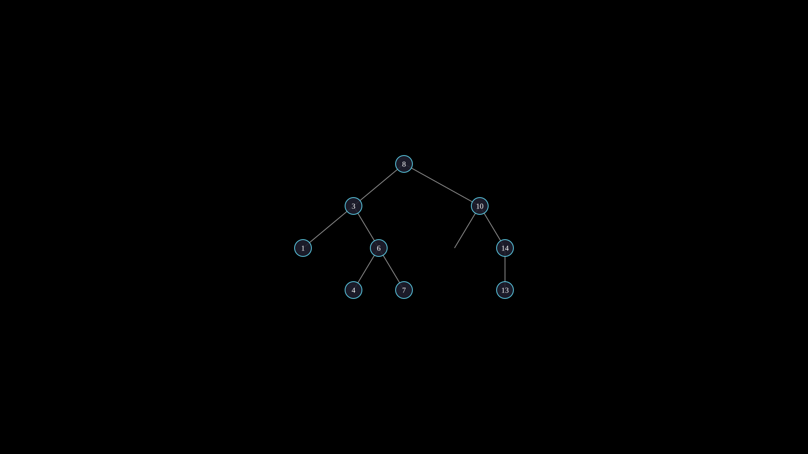
Hierarchical tree with highlighted path.
"""Tree with highlighted search path.""" from vectormation.objects import * v = VectorMathAnim() v.set_background() tree = Tree(('8', [ ('3', [('1', []), ('6', [('4', []), ('7', [])])]), ('10', [('', []), ('14', [('13', [])])]), ])) tree.center_to_pos() v.add(tree) v.show(end=2)
Example: horizontal layout
tree = Tree( ('CEO', [ ('CTO', [('Eng', []), ('QA', [])]), ('CFO', [('Finance', [])]), ]), layout='right', )
Stamp¶
- class Stamp(template, points, creation=0, z=0)¶
Place deep copies of a template object at specified positions. Each copy is shifted so its center aligns with the given point. Useful for repeating a shape or symbol at multiple locations.
- Parameters:
template (VObject) – Object to deep-copy and place. Can be any
VObjectorVCollection.points (list) – List of
(x, y)positions for each copy.creation (float) – Creation time.
z (float) – Z-index for layering.
Example: stamping stars
star = RegularPolygon(5, radius=20, fill='#FFFF00', fill_opacity=0.8) positions = [(300, 300), (600, 200), (900, 350), (1200, 250)] stamps = Stamp(star, positions)
Example: stamping dots along a curve
import math dot = Dot(r=8, fill='#58C4DD') points = [ (960 + 300 * math.cos(t), 540 + 200 * math.sin(t)) for t in [i * math.pi / 6 for i in range(12)] ] ring = Stamp(dot, points)
TimelineBar¶
- class TimelineBar(markers, total_duration=10, x=200, y=900, width=1520, height=6, marker_color='#FFFF00', font_size=14, creation=0, z=0)¶
Horizontal timeline bar with labeled markers at specific times. A thin track rectangle is drawn along the full width, with circular dots and tick lines placed at each marker position. Labels appear above each marker.
- Parameters:
markers (dict) –
{time_value: label_text}dictionary. Each key is a numeric time that determines the marker’s horizontal position.total_duration (float) – Total timeline duration (determines the scale). A marker at
time_valueis placed at fractiontime_value / total_durationalong the bar.x (float) – Left edge x-coordinate of the bar.
y (float) – Y-coordinate (vertical center) of the bar.
width (float) – Total bar width in pixels.
height (float) – Height of the track rectangle.
marker_color (str) – Color for marker dots and tick lines.
font_size (float) – Font size for marker labels.
creation (float) – Creation time.
z (float) – Z-index for layering.
Example: TimelineBar
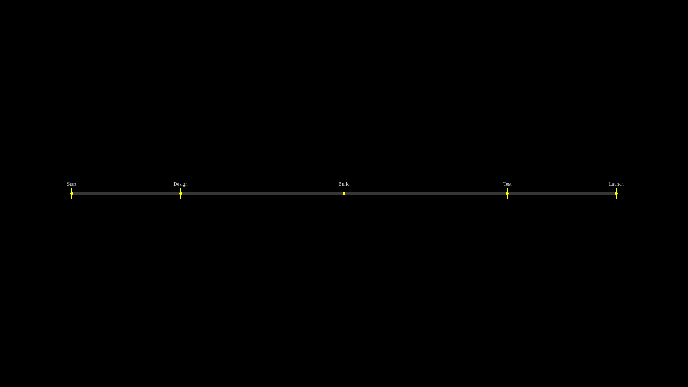
"""TimelineBar with labeled markers."""
from vectormation.objects import *
v = VectorMathAnim()
v.set_background()
timeline = TimelineBar(
markers={0: 'Start', 2: 'Design', 5: 'Build', 8: 'Test', 10: 'Launch'},
total_duration=10,
x=200, y=540, width=1520,
)
v.add(timeline)
v.show(end=0)
FlowChart¶
- class FlowChart(steps, direction='right', x=200, y=400, box_width=200, box_height=60, spacing=80, box_color='#58C4DD', text_color='#fff', arrow_color='#999', font_size=20, corner_radius=8, creation=0, z=0)
Simple flow chart with labeled rounded-rectangle boxes connected by arrows. Boxes are arranged in a linear sequence either horizontally or vertically.
- Parameters:
steps (list) – List of step label strings (e.g.
['Input', 'Process', 'Output']).direction (str) –
'right'for horizontal layout or'down'for vertical layout.x (float) – X-coordinate of the first box’s top-left corner.
y (float) – Y-coordinate of the first box’s top-left corner.
box_width (float) – Width of each box in pixels.
box_height (float) – Height of each box in pixels.
spacing (float) – Gap between consecutive boxes in pixels.
box_color (str) – Fill and stroke color for boxes.
text_color (str) – Text color for step labels.
arrow_color (str) – Stroke color for connecting arrows.
font_size (float) – Font size for step labels.
corner_radius (float) – Corner radius for rounded rectangles.
creation (float) – Creation time.
z (float) – Z-index for layering.
Example: FlowChart
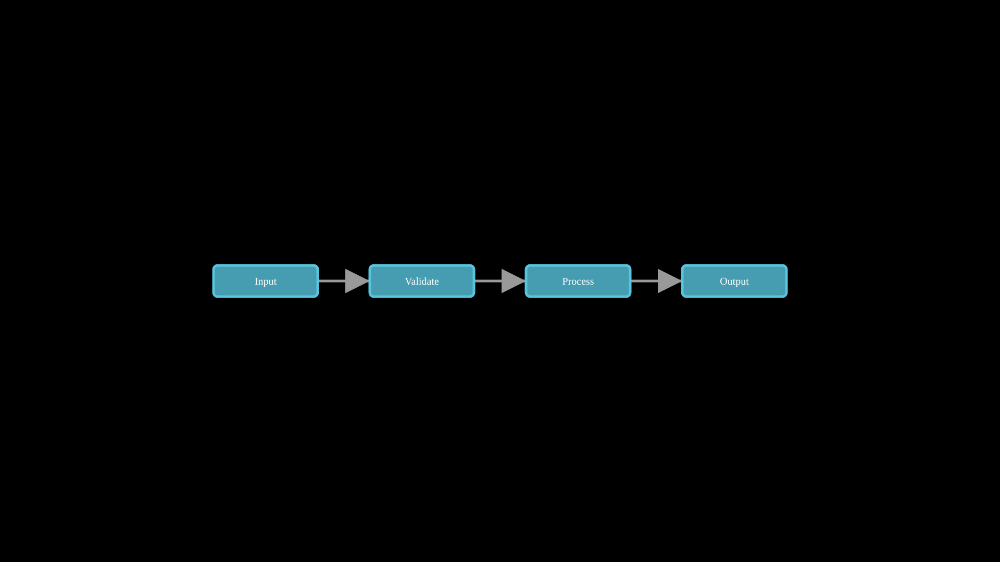
Simple horizontal flow chart.
"""Simple flowchart.""" from vectormation.objects import * v = VectorMathAnim() v.set_background() flow = FlowChart(['Input', 'Validate', 'Process', 'Output'], direction='right', box_color='#58C4DD', spacing=100) flow.center_to_pos() v.add(flow) v.show(end=2)
VennDiagram¶
- class VennDiagram(labels, sizes=None, x=960, y=540, radius=150, colors=None, font_size=24, creation=0, z=0)¶
Venn diagram with 2 or 3 overlapping semi-transparent circles. Labels are positioned outside each circle. The circles overlap with 25% fill opacity so intersection regions are visible as blended colors.
- Parameters:
labels (list) – 2 or 3 set labels (e.g.
['Set A', 'Set B']or['A', 'B', 'C']).sizes (list) – Per-circle radii (e.g.
[150, 200]). Defaults to radius for all circles.x (float) – Center x-coordinate of the diagram.
y (float) – Center y-coordinate of the diagram.
radius (float) – Default radius for all circles when sizes is
None.colors (list) – List of circle colors. Defaults to
['#58C4DD', '#FF6B6B', '#83C167'].font_size (float) – Font size for labels.
creation (float) – Creation time.
z (float) – Z-index for layering.
For 2-circle diagrams, circles are placed side by side with 70% radius separation. For 3-circle diagrams, circles are arranged in a triangular pattern with 65% radius separation.
Example: VennDiagram
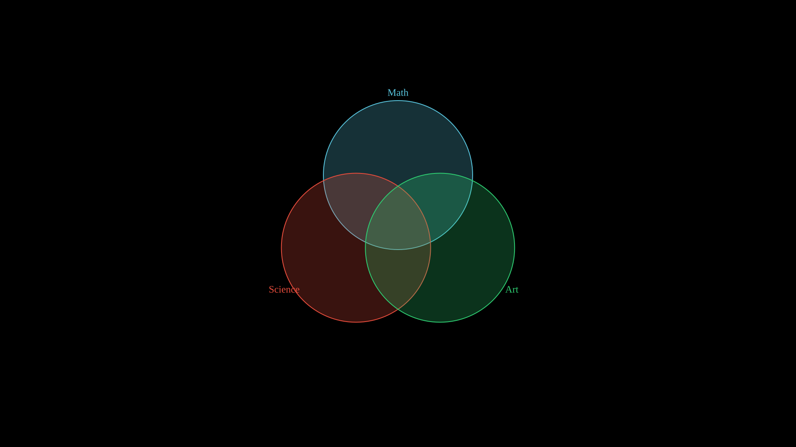
"""VennDiagram with three sets."""
from vectormation.objects import *
v = VectorMathAnim()
v.set_background()
venn = VennDiagram(
labels=['Math', 'Science', 'Art'],
colors=['#58C4DD', '#E74C3C', '#2ECC71'],
radius=180,
)
v.add(venn)
v.show(end=0)
OrgChart¶
- class OrgChart(root, x=960, y=80, h_spacing=180, v_spacing=100, box_width=120, box_height=40, font_size=16, colors=None, creation=0, z=0)¶
Organization chart from a tree structure. Nodes are rendered as color-coded rounded-rectangle boxes connected by L-shaped path connectors. Box colors vary by depth level, cycling through the provided color palette. Layout is computed using a breadth-first traversal to evenly distribute nodes at each level.
- Parameters:
root – Tree structure as
(label, [children])tuples, where each child is itself a(label, children)tuple and leaf nodes use an empty list.x (float) – Center x-coordinate of the chart (root node position).
y (float) – Y-coordinate of the top (root) level.
h_spacing (float) – Horizontal spacing between boxes at the same level in pixels.
v_spacing (float) – Vertical spacing between levels in pixels.
box_width (float) – Width of each box in pixels.
box_height (float) – Height of each box in pixels.
font_size (float) – Font size for box labels.
colors (list) – List of colors to cycle through by depth. Defaults to the built-in
DEFAULT_CHART_COLORSpalette.creation (float) – Creation time.
z (float) – Z-index for layering.
Example: OrgChart
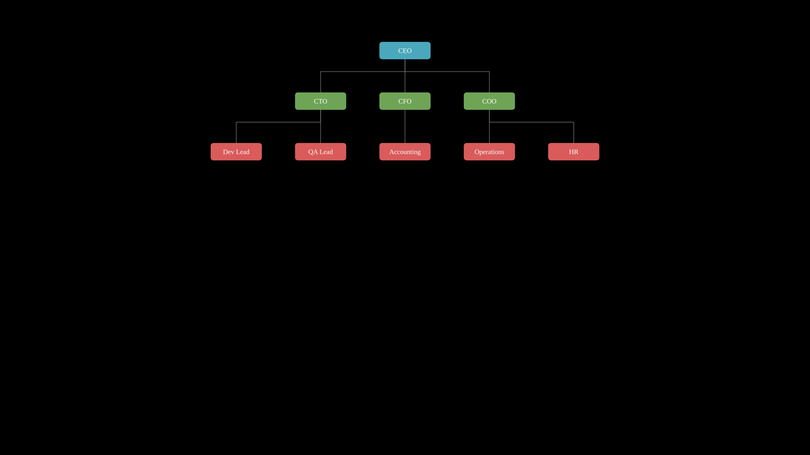
"""OrgChart tree structure."""
from vectormation.objects import *
v = VectorMathAnim()
v.set_background()
tree = ('CEO', [
('CTO', [
('Dev Lead', []),
('QA Lead', []),
]),
('CFO', [
('Accounting', []),
]),
('COO', [
('Operations', []),
('HR', []),
]),
])
chart = OrgChart(tree, y=100, h_spacing=200, v_spacing=120)
v.add(chart)
v.show(end=0)
MindMap¶
- class MindMap(root, cx=960, cy=540, radius=250, font_size=18, colors=None, creation=0, z=0)¶
Radial mind map diagram with a central node, branches, and grandchildren spread outward. The central topic is drawn as a large circle in the center, with first-level branches distributed evenly around it. Grandchildren (second-level nodes) fan out from their parent branch within a 60-degree arc.
- Parameters:
root – Tree structure as
(label, [(child_label, [grandchildren]), ...])tuples. Grandchildren follow the same(label, children)format but only two levels of depth are rendered.cx (float) – Center x-coordinate.
cy (float) – Center y-coordinate.
radius (float) – Distance from center to branch nodes in pixels. Grandchildren are placed at
radius * 0.5beyond their parent.font_size (float) – Font size for the central node and branches. Grandchild labels use
font_size * 0.65.colors (list) – List of colors to cycle through for branches. The first color is used for the central node. Defaults to the built-in
DEFAULT_CHART_COLORSpalette.creation (float) – Creation time.
z (float) – Z-index for layering.
Example: MindMap
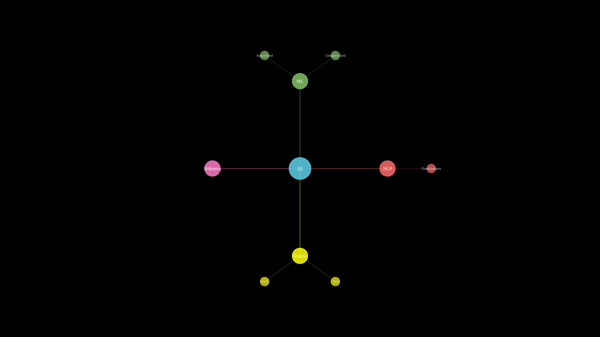
"""MindMap radial diagram."""
from vectormation.objects import *
v = VectorMathAnim()
v.set_background()
tree = ('AI', [
('ML', [
('Supervised', []),
('Unsupervised', []),
]),
('NLP', [
('Transformers', []),
]),
('Vision', [
('CNNs', []),
('GANs', []),
]),
('Robotics', []),
])
chart = MindMap(tree, radius=280)
v.add(chart)
v.show(end=0)